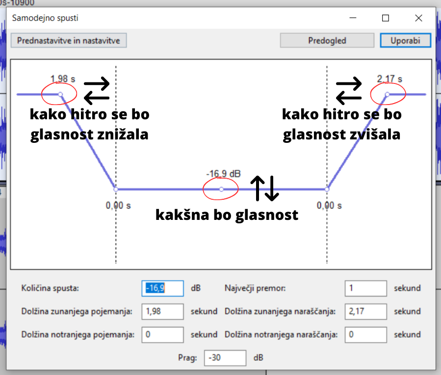

Tako izgleda program ko ga odpremo za ustvarjanje novega projekta.
Nastavitve projekta in mikrofona
Ko prvič uporabljamo program se moramo seznaniti z nekaterimi osnovnimi nastavitvami in orodji. Na začetku je dobro preveriti kvaliteto zvoka v našem projektu in sicer je ta originalno nastavljena na 44100 Hz (frekvenca zvoka) kar je čisto v redu, nižja številka bi pomenila slabšo kvaliteto višja pa boljšo kvaliteto vendar za navaden posnetek to ni potrebno. Potem preverimo mikrofon in zvočnik. Pritisnemo na ikono mikrofona in izberemo 'Začni opazovanje'. Ko govorimo in vidimo, da se barvna skala premika tako vemo, da mikrofon dela. Nastavitve so pri vsakemu drugačne saj so odvisne od tipa mikrofona in tudi ostalih nastavitev na računalniku. Če mikrofon dela pritisnemo start monitoring. Potem začnemo snemati.
Snemanje in osnovna orodja
Za začetek snemanja pritisnemo rdeč krogec, za konec pa črn kvadratek. Če želimo posnetek predvajati potem pritisnemo zeleno puščico ali tipko za presledek. Če želimo poslušati le del posnetka ga označimo z miško in lahko uporabimo ikono z lupo da ga razširimo ali skrčimo. Z ikono kuverte lahko zmanjšujemo glasnost posameznim stezam. Z ikono za risanje moramo najprej povečati zvočni posnetek dokler se ne prikažejo posamezni deli zvočnega vala in pike. Oroddje za risanje omogoča da ponovno narišemo obliko zvočnega vala. Tako lahko spremenimo glasnost posameznim primerom ali pa popravimo zvok da je bolj gladek. Večnamesko orodje(multi tool) pa so v njem združena orodje za označevanje, kuverta in risanje.
Dodajanje obstoječih ponetkov
Za dodajanje že obstoječega posnetka ga iz mape prenesemo v program in ga spustimo z miško.
Dodajanje glasbene podlage h glasu
Glasnost glasbe lahko urejamo z uporabo funkcije 'Samodejno spusti' tako se glasnost glasbe počasi zmanjša ko se začne glas in potem spet zveča. Najprej izberemo stezo z glasbo, gremo na 'učinki' in izberemo 'samodejno spusti'. Nastavimo hitrost utišanja in povečanja glasnosti glasbe ter učinek uporabimo na posnetku.
Shranjevanje projekta
Shranjevanje: Datoteka -> shrani projekt (2x). Shranjevanje pomeni da se projekt shrani v formatu, ki ga je mogoče odpreti le v programu Audacity. Omogoča kasnejše obdelovanje in popravke, saj je projekt še vedno shranjen v posameznoh zvočnih stezah in ne kot en sam posnetek, ki bi ga lahko predvajali v predvajalniku glasbe in podobno.
Izvoz posnetka
Izvoz: datoteka -> izvoz -> MP3/WAV/OGG. MP3 je standardna izbira za izvoz zvočnih posnetkov, saj tudi zmanjša velikost datoteke. WAV je najboljša kvaliteta posnetka, ki ga lahko izvozmo,saj je lossless format kar pomeni, da se pri izvažanju ne izgubi nobenih digitalnih podatkov. OGG je podoben format kot MP3 in enako zmanjša velikost datoteke, vendar je kvaliteta nekoliko boljša.